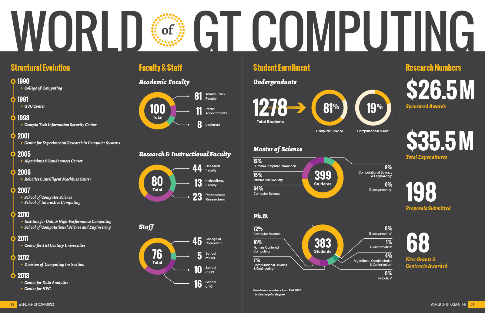
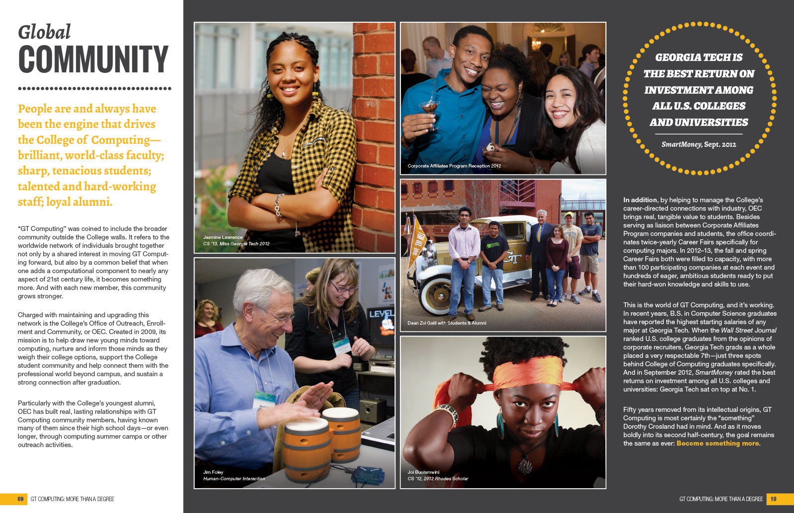

Georgia Tech College of Computing
Visual & Interface Design | Front-End Development
I served as Senior Designer for Georgia Tech's College of Computing for over four years, during which time I wore many hats, including visual designer, art director, UI/UX designer, and front-end developer (occasionally serving as photographer and video editor as well). I led visual rebranding efforts for all print and digital communications materials, and created a design system for use within the College's schools and research centers to help maintain consistency. I also served as lead designer for a redesign of the College's website, providing wireframes, user flows and design mockups, as well as front-end development.

